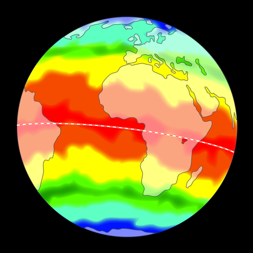

In Grade 6 learners covered material explaining how the spin of the Earth on its axis causes day and night. They also learnt that the Earth revolves around the Sun, completing one orbit every year. In this chapter we begin by reviewing this material before moving on to look at solar energy and the Earth's seasons. The main aims of this chapter are to ensure that learners understand the following:
The Earth revolves (orbits) around the Sun in one year.
The Earth's rotation axis is tilted relative to the plane of its orbit around the Sun.
This tilt of the Earth is responsible for the seasons as the Earth orbits the Sun.
The Sun provides energy that sustains all life on Earth.
Learners often battle with distinguishing between revolves and rotates as they confuse the words. If you find learners are battling with this, sometimes it helps to replace the word 'revolves' with 'orbits' so that the concept is clear and the learners are not confused by semantics. We have used the rotate and revolve here, as required by CAPS, but you can introduce this more slowly if you feel the wording is hindering your learners grasp of the concept.
It is important to address any misconceptions that learners may have regarding the cause of the seasons. Some common misconceptions are identified in section 1.1 and explanations are given.
At the end of section 1.1 there is a sub-section that covers the Seasons on other planets. It is included as an interesting and challenging extension. However, this section could cause confusion if the learners have not fully grasped why seasons occur on Earth, so do not attempt to include it if you have doubts about learner's comprehension of the previous material. This section is useful however as it helps learners to apply the knowledge they've gained about Earth to the other planets and gives learners a sense of the Earth's place within our solar system.
Concept maps: The concept maps in these workbooks were created using an open source programme called CMapTools. You can download it from this link if you would like to use it to create your own concept maps. http://cmap.ihmc.us/download/
The Sun is our closest star. It is a huge ball of very hot gas in space which radiates heat and light in all directions. All the planets, including our home, the Earth, travel around the Sun in orbits. As we will see in this chapter, the Sun is incredibly important: it provides us with light and warmth and its apparent motion across our sky causes day and night and the passage of the seasons.
It is incorrect to talk about the Sun 'burning'. The Sun is not 'burning' in the way a fire does. Remember, a fire burning on Earth requires oxygen and there is no oxygen in space. Rather, the gas is very hot and glowing as a result.
Our Sun.
Solar energy and the Earth's seasons
sphere
axis
rotation
revolution
day
orbit
Earth's rotation
Let's start off with seeing what you can remember learning about day and night in Grade 6.
Day and night revision exercise
INSTRUCTIONS:
Answer the questions in the table below.
QUESTIONS:
In which direction would you have to look to see the Sun rising?
In which direction would you look to see the Sun setting?
At what time is the Sun at its highest point in the sky?
At midnight, where is the Sun in relation to your position on the Earth?
How long does it take the Earth to complete one rotation on its axis?
In which direction would you have to look to see the Sun rising?
To the East
In which direction would you look to see the Sun setting?
To the West
At what time is the Sun at its highest point in the sky?
At midday
At midnight, where is the Sun in relation to your position on the Earth?
Directly opposite your position on the other side of the globe
How long does it take the Earth to complete one rotation on its axis?
24 hours (1 day)
Different planets take different amounts of time to make one complete rotation on their axis and so they have different lengths of days. Venus is the most sluggish rotator of all the planets in our solar system and takes 243 Earth days to complete one rotation. A Venus day lasts longer than 200 days on Earth!
If you follow the path of the Sun during the day you will see that it rises in the east and sets in the west. The Sun reaches its highest point at noon (midday). Why do you think it looks as though the Sun moves across the sky during the day?
The Sun is at different positions in the sky during the day. But is it the Sun that is moving?
Let's do an activity to find out!
Movement of a classroom Sun
This is an active group activity for the whole class. Ensure that the balloon or ball you use can be seen clearly by all learners. The learners will be standing up and turning around on the spot so ensure that they have enough room to turn without hitting each other or falling over their chairs. If space is cramped it might be a good idea to stack all the chairs away for the activity, or else ten or so children can stand up at a time and move and after that they sit down and the next ten take a turn.
Ensure that the learners know the difference between turning in a clockwise and anti-clockwise direction before they complete the activity.
MATERIALS:
yellow round balloon or ball which can be hung from the ceiling
string for hanging the ball or balloon
INSTRUCTIONS:
Hang up the balloon or ball from the ceiling using the string close to one of the corners in your classroom. Make sure that the balloon/ball is high up and visible from the back of the classroom. The balloon/ball represents the Sun.
Stand up in your classroom and face the balloon/ball.
Now slowly turn on the spot in a clockwise direction keeping your head still, completing two or three turns.
Repeat the activity but this time turn in an anti-clockwise direction.
QUESTIONS:
As you turned clockwise what direction did the hanging balloon/ball appear to move?
From right to left.
As you turned anti-clockwise what direction did the hanging balloon/ball appear to move?
From left to right.
Did the hanging Sun actually move?
No it was hanging in place.
Why do you think we see the Sun move across the sky?
The Sun appears to move from our perspective, but really we are moving. The Earth is spinning on its axis and the Sun appears to move in the opposite direction from our spin.
The story of our planet (video)
As you can see the hanging Sun is not really moving, it just appears to move because you are turning. This is also true for the real Sun in the sky. The Sun does not really move, it just appears to move because the Earth is turning on its axis. So, it is the Earth's rotation that causes the apparent movement of the Sun across the sky during the day.
Video of the Earth spinning on its axis causing day and night.
Daytime and nighttime
This is an active group activity for the whole class. Ensure that the balloon or ball you use can be seen clearly by all learners. They will have to walk around the globe so ensure that there is space to do this. Ensure that the lamp or torch you use fully illuminates one half of the globe. If only a small portion of the globe is lit up, move the lamp further away and if necessary use a stronger light source.
MATERIALS:
a globe (or a ball/balloon with the shapes of the continents drawn on it) which can be hung from the ceiling
string for hanging the globe
non-permanent marker or sticker
desk lamp or torch
black bin bags or curtains to darken the room
INSTRUCTIONS:
If you do not have a globe, you can make a model of the Earth yourself in class. Use any ball. Draw the Equator and mark the North and South Poles.
Mark with a dot/sticker your position on the globe.
Hang the globe from the ceiling near the middle of the class. It should be at about eye level height. The globe represents the Earth.
Darken the room.
Shine a desk lamp or torch on the globe facing Africa and keep the lamp/torch steady in this position. The torch represents the Sun.
Walk around the globe so that you can see all of it. Is it all lit up by the torch? How much of it is lit and how much is dark?
Half of the globe is lit and half is dark.
The lit area represents daytime and the dark area represents nighttime. Is your dot/sticker in daytime or nighttime?
The dot is in daytime as it is facing the lamp.
Now turn the globe anti-clockwise, half a turn. Is your dot/sticker in daytime or nighttime?
The dot is now in nighttime as it is facing away from the lamp.
Where is it now daytime?
Learner dependent answer. Accept any answer where there is light shining onto the globe. (i.e on the half of the globe now facing the lamp).
Keep turning the globe anti-clockwise until your dot/sticker is back in its original position and lit again. How long would it take on the real Earth for the dot to complete one rotation like this?
24 hours, or one day.
So, now you can see how the Earth's rotation about its axis causes day and night. When one half of the Earth is lit up by the Sun, the other half is in darkness. It is daytime in the lit half and nighttime in the dark half. As the Earth spins you move from light to shadow and back to light again over the course of one day (24 hours).
During the night you cannot see the Sun move across the sky, but if you look carefully you will notice that the stars move across the sky, just like the Sun does. It takes the Earth 24 hours to make one complete turn (called a rotation) on its axis, so an Earth day is 24 hours long.
This picture of the SALT telescope near Sutherland was taken at night with the camera shutter left open. You can see the star trails due to the Earth's rotation.
You now know that the Earth rotates on its axis completing one turn every 24 hours. But which way does it turn? Let's see if you can figure it out.
Why does the Earth spin? (video)
Which way does the Earth rotate?
This is a slightly more difficult activity. Ensure that the balloon or ball you use can be seen clearly by all learners. The learners will be standing up and turning around on the spot, ensure that they have enough room to turn without hitting each other or falling over their chairs. If space is cramped it might be a good idea to stack all the chairs away for the activity. Ensure that the learners know the difference between turning in a clockwise and anti-clockwise direction before they complete the activity.
MATERIALS:
a ball or balloon
string for hanging the ball
INSTRUCTIONS:
Hang up the balloon or ball from the ceiling using the string close to one of the corners in your classroom. Make sure that the balloon/ball is high up and visible from the back of the classroom. The ball represents the Sun.
Stand up in your classroom and face the balloon/ball.
Now slowly turn on the spot in a clockwise direction keeping your head still, completing two or three turns. Are you turning to your left or right? Note what happens to the hanging balloon or ball.
You are turning to your right. The ball appears to be moving from right to left.
Now repeat the activity but this time turn in an anti-clockwise direction. Are you turning to your left or right? Note what happens to the hanging balloon or ball.
You are turning to your left. The ball appears to be moving from left to right.
What do you notice about the direction that you turn (left or right) and the direction that the hanging Sun appears to move?
The directions are opposite to each other.
Which direction does the Sun appear to move across the sky, east to west or west to east? Given your answer to question 5 which way do you think the Earth is really turning?
The Sun appears to move from east to west. So the Earth is really moving west to east.
Look at the picture below showing the Earth from space. Using your answer to question 6, is the Earth spinning in a clockwise or anti-clockwise direction? Draw the direction on the picture below.
Anti-clockwise direction (as viewed from the North Pole).
This colour image shows North and South America (green and brown continents) as they would appear from space.
The only planet that rotates on its side like a barrel is Uranus. The only planet that spins backwards relative to the others is Venus.
Earth's revolution
The Earth revolves around the Sun in an almost perfect circle, completing one revolution (orbit) around the Sun per year (or 365 ¼ days to be precise). As the Earth revolves around the Sun it also rotates (spins) on its axis at the same time. Having two words both beginning with "r" relating to movement can be confusing! Let's check now that you know what they mean before we continue.
In your own words explain what is meant by the Earth's rotation.
It is the spinning of the Earth on its own axis. This axis is called the rotation axis.
In your own words explain what is meant by the Earth revolving.
This refers to the Earth travelling around the Sun in its orbit. One com
plete orbit is called a revolution.
Different planets take different amounts of time to make one complete revolution around the Sun and so their years have different lengths. The planets further from the Sun will have bigger orbits, as shown in the diagram, and therefore take longer to revolve around the Sun.
Our solar system.
Mercury has a year of just 88 Earth days, and Neptune has a year of 164 Earth years.
Why do we have seasons?
solar energy
intensity
oblique
direct
indirect
equator
equinox
hemisphere
tilt
season
solstice
A good way to introduce the concept of seasons is to have learners identify the traditional four seasons (spring, summer, autumn and winter). Ask them to describe the differences in weather and environment during the four seasons and ask them about the different activities they like to do in the different seasons (for example going to the beach in summer). You could then ask them roughly how long each of the seasons lasts and at what time of the year the different seasons occur. In a country as large as South Africa the climate varies considerably from place to place and while it may for example be spring-like in Pretoria, it could still be frosty in the Eastern Cape. Therefore, keep in mind that the four seasons (each lasting 3 months) have been defined mainly for temperate regions and the weather expected for "spring" (mild!) might not correspond exactly to the weather experienced in a given place in South Africa at a given time. Discussions in the chapter are therefore
kept as general as possible focusing on average temperatures in summer and winter for the northern and southern hemispheres.
Before investigating what causes the seasons on Earth you could ask learners what they think causes the seasons and list all the answers on a blackboard, perhaps taking a class vote for each reason. After doing the activities listed in section 1.1 you should ask the learners to recast their votes. It is important that any misconceptions that learners may have regarding the cause of the seasons be addressed and some common misconceptions are explained in the teachers notes in section 1.1.
As the Earth travels around the Sun it receives solar energy in the form of light and heat, emitted from the Sun. Do you remember that in Energy and Change last term, we spoke about how heat is transferred from the Sun through space, to Earth? What is this called?
Radiation.
The amount of solar energy the Earth receives is calledinsolation which comes from the words: incoming solar radiation
Insolation is not to be confused with insulation.
We are very lucky to have our Sun! if the Earth did not receive any energy from the Sun the Earth would be cold and lifeless. Have you noticed that the average temperature is not the same all year round? We experience the seasons: winter, spring, summer and autumn. It is generally much warmer in summer and cooler in winter, why do you think that is?
Learners will most probably have lots of different answers, accept all the answers and then carry out the activities in the chapter to investigate the true cause of the seasons.
Let's first make sure that we know some of the terminology about Earth before continuing.
Label the Earth
If possible, bring some oranges to class and get learners to draw the different lines of latitude onto the oranges using a permanent marker and marking the North and South Pole and the Northern and Southern Hemisphere.
INSTRUCTIONS:
Using the word bank, label the diagram of the Earth below.
Word bank:
Northern Hemisphere
Southern Hemisphere
Equator
North Pole
South Pole
Here is the labeled diagram:
You might already have some thoughts about why we get different seasons throughout the year.
What causes the seasons? Guesses!
INSTRUCTIONS:
Which of the
statements in the table do you think are true and which do you think are false? Put your answers in the right hand column.
Statement
True or False
We experience winter because the Sun emits less energy in winter.
We experience summer because we are closer to the Sun during summer.
If it is winter in the Northern Hemisphere it is winter in the Southern Hemisphere too.
Daytime is longer in the summer because the Earth spins more slowly in the summer months.
Statement
True or False
We experience winter because the Sun emits less energy in winter.
False
We experience summer because we are closer to the Sun during summer.
False
If it is winter in the Northern Hemisphere it is winter in the Southern Hemisphere too.
False
Daytime is longer in the summer because the Earth spins more slowly in the summer months.
False
ALL the statements in the "What causes the seasons?" activity are false! The amount of energy emitted by the Sun is the same all year round. Also the Earth spins on its axis at the same rate all year. When it is summer in Cape Town it is winter in Paris and when it is spring in London it is autumn in
South Africa. The seasons are reversed in the Northern and Southern Hemispheres. If it can both be winter and summer on different parts of the Earth at the same time, the seasons cannot be caused by our distance to the Sun. If that were the case, then the whole of the Earth would experience summer and winter at the same time.
Two common misconceptions about the seasons to be aware of whilst going through this content with learners:
1. Seasons are caused by the Earth being closer to the Sun in the summer and farther in the winter due to the Earth's oval orbit.
NO: IN FACT, the Earth's orbit around the Sun is elliptical but it is nearly a
perfect circle; it is off by only \(\text{4}\)%. Astronomers have calculated the resulting difference in incoming solar energy: it is only \(\text{7}\)% which is very small and not sufficient to cause the variations in the temperatures associated with the seasons. If this change in distance were responsible for the seasons, then
the Southern and Northern Hemispheres would experience summer and winter at the same time, which is not the case.
2. The Earth's tilt brings the Earth significantly nearer to the Sun during the hotter times of the year.
NO: IN FACT, the tilt of the Earth is the cause of our seasons, but this tilt does not bring us significantly closer to the Sun. The distance from the Sun to the Earth is on average 149 000 000 km and any difference caused by the Earth's tilt is tiny (the change in distance is
only about 0.003% of the distance between the Sun and the Earth). This is not sufficient to cause any differences in temperature.
Springtime in the Northern Cape, the flowers are out in bloom.Winter time in the Northern Cape. In Sutherland, temperatures can go below 0oC
and it often snows.
Let us now find out what causes the seasons. The seasons don't just divide up the year into quarters, they tell us where the Earth is in its path around the Sun. Have a look at the following diagram which shows how the Earth revolves (orbits) around the Sun and the different seasons experienced by the Southern Hemisphere.
The relative position of the Earth around the Sun is not drawn to scale. If it was drawn to scale, the Earth would not fit on this page!
The relative
positions of the Earth and Sun during the course of a year. It takes one complete year for the Earth to revolve (orbit) around the Sun. It takes six months for the Earth to travel halfway around the Sun.
Look at the picture showing the position of the Earth as it orbits the Sun during a year. The Earth travels around the Sun in an almost perfect circle. If you look closely, you can see that the Earth's axis is not pointing straight up, but is slanted, or tilted in the picture. This is because the Earth is actually tipped over slightly relative to the plane of its orbit. The Earth's axis always tilts in the same direction in space: the North Pole points towards the star Polaris.
The Earth's orbit is actually very slightly elongated but very close to a circle, called an ellipse.
What do we mean when we say that the Earth's axis is tilted relative to the plane of its orbit? A plane is a flat surface, for example a flat piece of card or the surface of still water. The plane of the Earth's orbit is an imaginary flat surface that contains the Earth as it revolves around the Sun.
Imagine that the Earth is a beach ball floating on the surface of water in a swimming pool with half the ball submerged so that you can only see the top half of the ball poking out of the water. Now imagine that the ball is moving around in a circle on the surface of the water but it is not moving up or down. This is what we mean when we say that the Earth travels in a circle in a plane. In this example the Earth's orbital plane is the surface of the water. In space there is no surface of water, the plane is just an imaginary flat surface!
Now imagine that the valve where you blow up the beach ball is pointing straight up towards the sky. This valve represents the Earth's North Pole. In this case the valve and the plane are perpendicular to each other and the angle between them is 90 degrees.
However, if you push the ball over slightly so that the valve no longer points straight up, then the valve (representing the Earth's North Pole) and the water surface will not be perpendicular to each other.
The Earth's rotation axis is tilted over by an angle of 23.5 degrees (23.5°) from the vertical. As the Earth travels around the Sun its North and South Poles constantly point in the same direction in space.
By pure luck, in the Northern Hemisphere the North Pole points to the star Polaris, which allows astronomers to find north easily! Unfortunately, there is no "south star" in the Southern Hemisphere.
The Earth's rotation axis is tilted by 23.5° from the vertical as it orbits the Sun.
Let's model the Earth's tilt.
The Earth's tilt
This activity is designed to reinforce the idea that the Earth's axis always points in the same direction in space. The North Pole points towards the star Polaris (North Pole Star) and you can mention this to learners. Unfortunately, there is no southern equivalent of the North Pole Star.
MATERIALS:
globe or ball/balloon
non-permanent marker or stickers
card and tin foil to
make a star
string
scissors
glue
INSTRUCTIONS:
Mark on the globe the position of the North and South Pole with a marker or stickers. If using a ball or balloon mark the positions of two points directly opposite each other on the surface of the ball/balloon which will be used to represent the North and South Poles of the ball/balloon.
Using the scissors, cut the card into the shape of a star.
Cover the star in foil, using the glue if necessary to stick it to the card.
Hang the star up from the ceiling using the string. Make sure it is high up and clearly visible from the whole of the class.
Sit in a circle with the rest of your class, your class teacher should sit or stand in the middle of the circle representing the Sun.
Select one member of your class in the circle to start the activity and pass the globe to them.
Tilt the globe away from the vertical, pointing the North Pole towards the hanging star.
Pass the globe around the circle keeping the North Pole pointed in the same direction towards the hanging star. Remember to keep the globe spinning on its axis as it is passed around!
Note how as the globe moves around the circle, sometimes the Northern Hemisphere is tilted more towards the Sun, sometimes the Southern Hemisphere is pointed more towards the Sun and sometimes neither hemispheres are tilted towards the Sun.
QUESTIONS:
For roughly what fraction of the orbit did
the Southern Hemisphere point towards the Sun?
1/4 of the orbit.
For roughly what fraction of the orbit did the Northern Hemisphere point towards the Sun?
1/4 of the orbit.
What length
of time do these fractions correspond to for the real Earth's orbit around the Sun?
Both represent 3 months.
Let's see now what effect this tilt has on the Earth.
Direct and indirect light
Before starting this activity, explain what is meant by direct and indirect. The aim of this activity is to see how the
energy from a torch is spread out when the light is shone directly and indirectly onto card. In this activity students will need to shine a torch onto black card. Learners will need to work in pairs so that one person can hold the torch and the other one can draw an outline of the beam of light.
This activity works best when the room is darkened, as it is easier to see the torch light. Some torches produce concentric rings rather than a smooth light distribution. If this is the case the learners should pick a given ring (say the outside one, or the one immediately inside this, whichever is easier to see) and stick to observing this ring in both cases. Learners should find that the direct light is more concentrated (spread over a smaller area) than indirect light.
MATERIALS:
A4 sized or larger piece of black card, one per pair
torch, one per pair
bin bags to darken the room if necessary
pencil or pen, one per pair
INSTRUCTIONS:
You will need to work in a pair for this activity.
Place the card flat on a desktop or table.
Darken the room using curtains or bin bags.
One person should hold the torch about 25 cm above the card pointing straight down onto the card. Shine the light onto the card.
Look at the beam shining on the black card and note its size. The person in the pair not holding the torch should draw around the edge of the beam with a pen or pencil.
Swap places and point the torch towards the card at an angle
of 45°, keeping it at the same distance from the card as before. Shine the light onto the card.
Look at the beam shining on to the card, draw around the edge of the beam with a pen or pencil.
QUESTIONS:
In which case is the light more concentrated? (direct or indirect)
Direct.
In which case is the light more spread out? (direct or indirect)
Indirect.
If the light is more concentrated, does this mean that the energy from the torch is more concentrated or spread out?
If the light is more concentrated, energy from the torch is more concentrated, and spread over a smaller area.
In which case did the light look brighter? Why is this?
Direct. Because the energy from the light is spread over a smaller area, so each unit area receives more energy compared with the indirect case. As the brightness is proportional to the amount of energy received, so areas which receive more energy per unit area are brighter.
The energy is spread out over a larger surface area when the light is shone at a slanting (oblique) angle relative to the card than when it is shone directly onto the card. Similarly, when light from the Sun hits the Earth directly, the solar energy is spread over a smaller surface area and is more intense (concentrated) than when light hits the Earth indirectly. Do you think this has an effect on the temperature? Let's investigate.
Direct and indirect light and its effects on temperature
Scientists often use models to recreate the real world in a laboratory. In this investigation, you will use a model to simulate how sunlight strikes the surface of the Earth. You will use a torch to represent the Sun. You will change the angle at which light strikes a flat surface and see what effect this has on the heating of the surface. This will model how sunlight strikes the surface of the
Earth at different angles.
The aim of this investigation is to demonstrate that direct light heats up an area more quickly than indirect light. It is assumed that this experiment will be a teacher led demonstration but with measurements taken by the learners, however, if you have enough equipment there is no reason why the learners cannot set up the experiment themselves. Strip thermometers are often used for taking children's temperatures and are available in most chemists. You can extend this activity if you wish by changing the angle at which the "indirect light" lamp points at the card in steps. Learners should find that shallower angles with respect to the surface produce lower temperature readings.
Ensure that the two lamps have bulbs of the same
power installed in them. During the experiment the strip thermometers may become too hot. If this happens turn both the lamps off for about 5 minutes and let them cool down, then start the observation again.
INVESTIGATIVE QUESTION:
Does direct light heat an area more quickly or slowly than indirect light?
HYPOTHESIS:
What do you think will happen?
Learner-dependent answer. Learners could state 'The direct light will heat the area
more quickly.'
IDENTIFY VARIABLES:
What are you keeping constant in this experiment?
The distance of the lamp from the thermometer is kept constant. Also the power of the light bulbs used in the lamps are kept constant. The amount of time that light is shone on each thermometer is also kept constant. These are called control variables.
What are you changing in this experiment?
The angle at which the light hits the card is changing, in the first case, A, the light is direct. In the second case, B, the light is indirect. This is the changing independent variable.
What are you going to be measuring in this investigation?
The temperature. This is the
dependent variable.
MATERIALS AND APPARATUS:
two desk lamps
two pieces of black card/paper
two strip thermometers
watch or clock
marker pen and/or sticker to label the cards
METHOD:
Place the two desk lamps on a table or desk about 1 metre apart from each other.
Point one of the desk lamps directly downwards towards the table, at a height of about 30 cm.
Place the black card under the light and label it "A".
Place the thermometer strip in the centre of the black card. The light bulb should be
directly above the thermometer strip.
Adjust the second desk lamp so that it is at the same height as the first one, but instead of pointing it directly down at the table, tilt it slightly to one side (left-right direction).
Place the second piece of black card under this lamp and label it "B".
Place the second thermometer strip in the centre of the black paper. This light should shine indirectly over the thermometer.
Record the temperature of both thermometers in the table below.
Turn on both lights at the same time. Wait for about 30 seconds and then record the temperatures of the thermometers in the table below.
RESULTS AND OBSERVATIONS:
Card
Initial temperature (°C)
Final temperature (°C)
Temperature difference (°C)
Card A (direct light)
Card B (indirect light)
The temperatures recorded are learner dependent. However, all
learners should agree on the initial temperature of the thermometers. The thermometers should indicate the same initial temperature if they are calibrated correctly. The final temperature should be higher than the initial temperature, and the temperature of A should be higher than B. They should then work out the temperature difference by subtracting the initial temperature from the final temperature.
Is light hitting the card from lamp A direct or indirect light?
Direct light.
Is light hitting the card from lamp B direct or indirect light?
Indirect light.
Which card has the hottest final temperature? Why is this?
Card A, this is because the light is shining directly onto it and so the energy is more
concentrated.
EVALUATION:
How could you have improved this experiment?
Learner-dependent answer. Learners should clearly explain the reasoning behind their answers. Examples could include using more sensitive thermometers, repeating the observations and taking an average value for the temperatures.
CONCLUSION:
What do you
conclude about the heating effects of direct and indirect light? Why do you think this is the case?
Direct light heats the card more quickly as light is more concentrated and so more energy per unit area falls onto the card. This energy is what causes the heating and so if there is more energy per unit area falling on a surface then there will be more heating of that surface.
QUESTIONS:
Imagine that the lamps represent sunlight and the cards represent the surface of the Earth.
What
season on Earth do you think corresponds to case A, and why do you think this?
Summer because it is warmer.
What season on Earth do you think corresponds to case B, and why do you think this?
Winter because it is cooler.
Areas of the Earth that are hit by direct sunlight are therefore warmer than areas that are hit by indirect sunlight. In the summer, the Sun is high in the sky and we receive more direct sunlight than in winter when the Sun is lower in the sky and we receive more indirect sunlight. This explains why summer is warmer than winter.
But why do we receive more direct light in summer? And why is it always warmer at the equator than at the North and South Poles? Let's do an activity to find out.
Looking at sunlight hitting the Earth
The aim of this exercise is to introduce learners to the concept that sunlight hits the Earth at varying angles across the Earth's surface because it is curved. At the equator you can see that sunlight hits the Earth almost straight on, this is called direct light. Areas close to the equator are warm as the Sun's energy is concentrated in these regions. As the Earth is curved, not all of the Sun's rays hit it directly. Areas that are hit by indirect sunlight are cooler because the Sun's energy is spread out over a large area. The poles are always hit by indirect light which explains why it is cold at the North and South Poles.
In this example, the Southern Hemisphere is tilted towards the Sun. In the Northern Hemisphere most of the sunlight hits the surface of the Earth at a shallow slanted (oblique) angle relative to the Earth's surface, and so it receives more indirect light. The Southern Hemisphere receives lots of sunlight straight on (directly) and a little also hits at an oblique angle (indirectly) close to the South Pole. As the Southern Hemisphere receives more direct light it is summer there.
This exercise may prove a little harder for the learners as they have to visualise the angle at which the Sun's rays strike the Earth along a curved surface. Encourage them to rotate the book around if needed so that the surface of the Earth is always horizontal.
INSTRUCTIONS:
Look at the example picture below. It shows sunlight hitting the Earth.
Look at the Sun's rays and see how the angle at which they hit the Earth's surface changes at different points along the surface of the Earth because of its curved shape.
Answer the questions below.
QUESTIONS:
Does the equator receive more or less direct light than the poles?
More direct light.
Which hemisphere receives more direct light in the picture? Why is this?
The Southern Hemisphere receives more direct light as it is tilted towards the Sun.
Which hemisphere in this diagram receives more indirect light? Why is this?
The Northern Hemisphere receives more indirect light as it is tilted away from the Sun.
Why do you think it is warmer at the equator than at the poles?
Because the equator receives more direct light where the solar energy is more concentrated and the poles receive only indirect light where solar energy is more spread out.
Is it summer or winter in the Southern Hemisphere in this example?
Summer.
Is it summer or winter in the Northern Hemisphere in this example?
Winter.
What would happen to the seasons if the Earth was tilted in the opposite direction, with the Northern Hemisphere tilted towards the Sun instead?
The seasons would be reversed, it would be summer in the Northern Hemisphere and winter in the Southern Hemisphere.
The light falling on the Equator always hits at angles very close to 90° (almost direct), so it stays almost the same temperature all year round.
The areas around the Equator are warmer than at the poles throughout the year, as light falls almost directly on the Earth's surface between the Tropic of Cancer and Tropic of Capricorn.
Areas that are hit by indirect sunlight are cooler because the Sun's energy is spread out over a larger area than at the equator. The poles are always hit by indirect sunlight which explains why it is cold at the North and South Poles.
Another way to say that the light falls indirectly is to say obliquely. Oblique means it is not at a right angle (90°), but slanted.
Having discovered that the Earth is warmer close to the equator and cooler towards the poles you could start discussions related to this. For example, why is the world's population distributed the way it is? How long is the growing season for each region of the world? Tundra, Desert, Deciduous versus Coniferous versus Rain Forest. Why?
We experience the different seasons because of the varying amount of direct and indirect sunlight we receive. When the Southern Hemisphere is tilted towards the Sun it receives more direct sunlight (more radiant energy) and temperatures increase: it is summer in the Southern Hemisphere.
The opposite hemisphere is tilted away from the Sun and receives
less direct sunlight, it receives less energy and temperatures decrease, so it is winter in the Northern Hemisphere. When the Northern Hemisphere is tilted towards the Sun we have the opposite case and it is summer in the Northern Hemisphere and winter in the Southern Hemisphere.
The seasons as the Earth revolves around the Sun.
A nice arts and craft activity to reinforce the idea that the tilt of the Earth's rotation axis is responsible for the seasons is to have learners make a poster of the above figure, labelling the Earth and Sun, the equator, hemispheres, poles, tilt (towards, away, neither) and resulting seasons for each hemisphere at each position.
In the picture above you can see the Earth travelling around the Sun in its orbit. The Earth's axis always points in the same direction in space. Because of this, sometimes the Southern Hemisphere is tilted towards the Sun and sometimes it is tilted away from the Sun. Let's follow the path of the Earth around the Sun as it completes one revolution from points 1 to 4.
At position 1 the light falls directly on the Tropic of Capricorn (23.5° S). This occurs when we, in the Southern Hemisphere, are having summer, and is called a solstice. The day of the summer solstice is the longest day in the year. In the Southern Hemisphere, this is usually around 21 December.
At position 3, the light falls directly on the Tropic of Cancer (23.5° N). This occurs during our winter, whilst the Northern Hemisphere is having summer. This is called the winter solstice in the Southern Hemisphere and occurs around the 21 June. The winter solstice is the shortest day of the year.
Different cultures around the world have various celebrations and holidays around the winter and summer solstices, the equinoxes, and the midpoints between them.
At position 2 and 4, the equator receives direct sunlight. This is called an equinox. An equinox occurs twice a year, around 20 March (when our autumn equinox occurs at position 2) and 22 September (when our spring equinox occurs at position 4).
The term 'equinox'
comes from the Latin words aequus (equal) and nox (night), because around the equinox, night and day are about the same length.
Earth's seasons summary
INSTRUCTIONS:
Refer to the previous diagram showing the Earth's seasons.
Fill in the blanks in the sentences below.
Write out the paragraph in full and underline your answers.
QUESTIONS:
At position 1, the Southern Hemisphere is tilted towards the Sun and experiences summer. This is called the summer _____ in the Southern Hemisphere and occurs around the date, _____. The Northern Hemisphere is tilted _____ from the Sun and experiences winter. This is called the winter _____ in the Northern Hemisphere.
At position 1, the Southern Hemisphere is tilted towards the Sun and experiences summer. This is called the summer solstice in the Southern Hemisphere and occurs around the date, 21 December. The Northern Hemisphere is tilted away from the Sun and experiences winter. This is called the winter solstice in the Northern Hemisphere.
At position 2, _____ months later, neither hemisphere is tilted more toward the Sun. Direct sunlight only hits the Earth near the _____ and indirect sunlight hits nearly everywhere else. This is called an _____. This causes mild temperatures in the north and south away from the equator.
At position 2, three months later, neither hemisphere is tilted more toward the Sun. Direct light only hits the Earth near the equator and indirect light hits nearly everywhere else. This is called an equinox. This causes mild temperatures in the north and south away from the equator.
Six months later, the Southern Hemisphere is tilted _____ from the Sun and experiences _____. This is called the winter _____ in the Southern Hemisphere and occurs around the date, _____. The Northern Hemisphere is tilted _____ the Sun and experiences _____. This is called the summer _____ in the Northern Hemisphere.
Six months later, the Southern Hemisphere is tilted away from the Sun and experiences winter. This is called the winter solstice in the Southern Hemisphere and occurs around the date, 21 June. The Northern Hemisphere is tilted towards the Sun and experiences summer. This is called the summer solstice in the Northern Hemisphere.
Nine months later, neither hemisphere is tilted more toward the Sun. Direct light only hits the Earth near the _____ and indirect light hits nearly everywhere else. This causes mild temperatures in the north and south away from the equator.
Nine months later, either hemisphere is tilted more toward the Sun. Direct light only hits the Earth near the equator and indirect light hits nearly everywhere else. This causes mild temperatures in the north and south away from the equator.
The Earth is now back to its starting point again, having completed one revolution of the Sun in _____ months.
The Earth is now back to its starting point again, having completed one revolution of the Sun in twelve months
Why do you think it is important to know about the seasons? Think about how people used the knowledge of the seasons to organise their lives and mark the passage of time. Discuss this with your class and take some notes below.
Learner-dependent answer
It is important that we relate the learning in class to learners' everyday lives so that it is applicable to them. You can have a class discussion on this topic, but learners must also write down their own thoughts. Start off by asking learners what do they think we can learn from learning about the seasons?
Some of the benefits of learning about the seasons relate to indigenous knowledge, such as knowing when to plant crops, when to harvest and when to store food for the winter months. Before people had calendars, they used the seasons to mark the passage of time and know when a year had gone by and the cycle repeated again.
So you now know that temperatures (and therefore the seasons) on Earth are determined by the angle at which sunlight hits the Earth. In summer, the Sun is high in the sky and sunlight hits the Earth directly. In winter, the Sun is low in the sky and the Sun's rays strike the Earth indirectly at an oblique (shallow) angle. The seasons occur because the Earth's axis is tilted relative to the path of its orbit around the Sun and not because the distance between the Earth and the Sun vary as the Earth revolves around the Sun.
The reason for the seasons (video)
Viewed from the Earth's surface, the Sun appears higher in the sky in summer. As the
Sun travels higher in the sky it takes more time to travel across the sky from sunrise to sunset. Therefore, daytime is longer in summer than in winter. The change in the length of daytime during the year also occurs because of the tilt of the Earth's rotation axis in space.
The apparent path of the Sun across the sky in winter and summer. The Sun travels higher and further across the sky in summer, and so days are longer.
Remember that it is NOT actually the Sun that moves, but Earth's rotation which makes it look as though the Sun moves across the sky.
The following questions are challenging and can be used to test the most able learners and extend their thinking.
What do you think would happen to the seasons if the Earth were not tilted by 23.5°, but instead were pointed straight up relative to the path of its orbit?
You can discuss this with your class. The Sun's path across the sky would be the same all year round and there would no longer be seasons as we know them. It would still be warm at the equator and cold at the poles however. The biggest impact on temperatures would be at the poles. Presently they have dark winters with extremely low temperatures followed by warmer temperatures and constant light in the summer. If there were no tilt, the polar regions would have much more uniform temperatures all year round and the Sun would always be low on the horizon. Across the Earth it would be like it is in the middle of autumn or spring all year.
There would still be some slight changes during the year. This is because the Earth-Sun distance varies during the year as the Earth's orbit around the Sun is not a perfect circle (it is slightly elliptical). Currently, the Earth is closest to the Sun in January and furthest away in July. With no tilt, this change in Earth-Sun distance during the year would produce a slight impact on the weather pattern. It must be emphasised that the effect would be tiny as the Earth-Sun distance does not vary significantly different during the year (147 million km in January 2013 compared to 152 million km in July 2013).
The Southern Hemisphere receives the greatest amount of solar energy around the 21st of December each year. However, the hottest days of the year are generally a month or so afterwards. Why do you think this is?
This is because it takes time for the land and sea to heat up or cool down. This is also explains why the seasons change gradually.
The video showing a year of the sky is very interesting. Each panel shows one day so there are 360 movie panels playing at once to show the sky over almost a whole year, as recorded in San Francisco. 28 July is shown in the upper left and January 1 is about half way down. The camera recorded an image every 10 seconds from sunrise to sunset. You can see the time going by in the bottom right. This video is useful to show learners how although each day lasts 24 hours, the amount of sunlight changes depending on the season. Although this video is for the Northern Hemisphere and we are in the Southern Hemisphere, it is still very
interesting and can be used to demonstrate the difference in daylight hours very eloquently. You can ask the learners why they think the bottom videos (and soon the top videos) are the first to light. This is because it is dawn and the Sun rises earlier in the summer months of June, July and August in the Northern Hemisphere, so these panels light up earlier than the others for the winter months. The initial darkness in the middle depicts the delayed dawn and fewer daylight hours of winter.
Seasons on other planets
This section is an extension which is not required by CAPS, but offers an opportunity to extend your learner's thinking, if you feel you have time in class and you need to assess the capabilities of your learners. Alternatively, learners can read it themselves in their own time.
Do you think that other planets experience seasons too?
Yes they do! Every planet in the solar system has seasons, but they are nothing like the seasons we experience on Earth. Seasons pass very quickly on some planets like Venus, yet last decades on others like Uranus. Unlike the Earth's seasons, which are caused only by the tilt of the Earth's axis in space, seasons on other planets can be caused by:
The tilt of the planet's rotation axis.
The variable distance of the planet from the Sun during its orbit. This is because some planets have extremely oval shaped orbits around the Sun unlike Earth.
The planets Venus and Jupiter have very small tilts compared with Earth. Their rotation axes are only tilted by 3° compared with the Earth's 23.5° tilt and so Venus' and Jupiter's seasons are hardly noticeable. Venus does have interesting weather however! Venus's surface is a whopping 460 °C all year round because Venus has an atmosphere made of dense acidic clouds which trap sunlight leading to a runaway greenhouse effect.
Mars's tilt is 25°, very close to the Earth's 23.5°. Because of this tilt, Mars has seasons, just like the Earth. As Mars takes two Earth years to orbit the Sun, the seasons on Mars are twice as long. The rotation axis of Mars does not point toward Polaris, our North Star, but points towards the star Alpha Cygni. Because of this, Martian seasons are out of step with the seasons on Earth. Mars also has a distinctly oval-shaped orbit. When Mars is further away from the Sun in its orbit it is cooler, which leads to long, extreme southern winters. The northern winters are not so long and extreme because they occur when the planet is closer to the Sun.
The planet with the most extreme seasons in the solar system is Uranus. Like Earth, the orbit of Uranus is nearly circular, however, Uranus's rotation axis is tilted by a massive 98°. Uranus is on its side!
Uranus.
Uranus completes one revolution around the Sun every 84 Earth years, giving rise to seasons which last 21 years each! For two of the seasons, one pole is pointed directly at the Sun and the opposite hemisphere does not see the Sun because Uranus spins on its side. The hemisphere facing away from the Sun experiences a long (around 21 years!) dark, bitterly cold winter and doesn't see the Sun until the planet has travelled on in its orbit, to a point in its orbit where Uranus's rotation axis no longer points directly at the Sun.
The seasons on Uranus: In 1986 the south pole was facing the Sun and so its Northern Hemisphere was in total darkness. In 2028 the North Pole of Uranus will face the Sun and the Southern Hemisphere will be in total darkness. Presently, neither pole is facing the Sun directly.
Solar energy and life on Earth
solar energy
photosynthesis
cellulose
glucose
starch
This section builds on what was done in Grades 4-6 on energy and photosynthesis to expand learners' understanding of these concepts and include the concept that the Sun's energy can be captured through photosynthesis and stored as carbohydrates to sustain life on Earth.
Earlier in Grade 7, in the Energy and Change section, the concept of fossil fuels was discussed with a focus on renewable versus non-renewable energy sources. This is extended here by looking into how fossil fuels were formed and how they captured the Sun's energy for use millions of years later. Learners need to realise how crucially important the Sun is for life on Earth.
In earlier grades energy transfer from producers to consumers, in food chains and food webs, were discussed. Here we look at capturing the energy from its source, the Sun, and storing it for later use. The overarching concept that energy cannot be created or destroyed, it can only be transferred from one form to another, should come through strongly in this section and the next one.
Misconception: The carbon in plants comes from the soil.
This could be used as an introduction to the section. Ask learners what wood is made of (mainly carbon) and where the carbon comes from that a tree is made of. Learners might say the soil (which is incorrect). This could then lead into a discussion of photosynthesis (revision) and how energy is captured by plants. Learners could be lead to discover that plants take up atmospheric carbon from the carbon dioxide air and not from the soil - wood is composed mainly of carbon atoms which come from atmospheric carbon dioxide. This is how plants capture carbon and store it so that human and animals are able to use it. The take-up of carbon by plants is also important as it controls the amount of greenhouse gases in the atmosphere (CO2 is a problematic greenhouse gas when in excess). When plants die and decompose to eventually form coal, the carbon remains in the fossil fuel which we harness later on. The same applies for oil and natural gas.
So far this term you learnt about how the Sun and Earth interact to form day and night, and the seasons. In this section we are going to look further at how important the Sun is for us on Earth, and more specifically at how the energy from the Sun is essential for life on Earth.
In Grade 6 you learnt how plants produce food through the process of photosynthesis. Plants absorb light energy from the Sun and use the energy to make food. In this way the Sun's energy is captured and stored so that it can be used later on.
: The process of photosynthesis to produce carbohydrates which are stored in the plant.
Plants also take up minerals from the soil, which are necessary for their functioning.
In photosynthesis the energy from the Sun is to used to change carbon dioxide and water into carbohydrates (for example cellulose, starch or glucose). The carbohydrates are stored in fruits, leaves, wood or bark. When we eat the plant, for example an apple, our bodies are able to release the energy stored in carbohydrates. In the same way animals, for example cows, use the Sun's energy when they eat the grass.
Capturing the Sun's energy
Study the following flow diagram and answer the question below.
QUESTION:
A boy says: 'The energy I get from eating a slice of bread is a result of the Sun shining on Earth.' Do you agree with this statement? Use the flow diagram provided, and write a paragraph to explain why you agree or disagree with the statement. Use the words in the word bank in your explanation.
Word bank:
capture
release
store
energy
photosynthesis
Sun
wheat
bread
Learner-dependent answer. It is not important whether the learner agrees with the statement or not, but rather what they write in their explanation. A possible explanation could be:
The Sun's energy is captured through a process called photosynthesis. Wheat plants use the energy to make carbohydrates which they store in their wheat kernels. The wheat kernels are ground to make flour for bread. The Sun's energy is therefore captured in the carbohydrates found in bread, so when the boy eats the bread, the energy from the carbohydrates is released.
All plants and animals depend on photosynthesis for their energy. In previous grades, you learnt about energy transfer between producers, for example grass, and consumers, for example a buck or lion. You used food chains and food webs to show how energy is transferred. Plants play a vital role in life on Earth as they form the basis of food chains. Without plants, life on Earth would not survive. Plants are completely dependant upon the Sun for survival and would die out without its energy which allows them to photosynthesize. Let's investigate this in the following activity:
What would happen if the Sun's rays are blocked from reaching Earth?
Imagine a world without the Sun. How can this happen? It has happened before in Earth's history.
Dinosaurs lived on Earth millions of years ago. They were the dominant terrestrial vertebrates until about 65 million years ago, when there was a massive extinction. There are several theories about what caused this mass extinction. The most supported theory is that a massive asteroid hit Earth. It entered Earth's atmosphere with a brilliant flash of light and crashed into a shallow sea. Huge pieces of red-hot rock and steam exploded into the sky, causing raging fires which destroyed everything in their path. The asteroid's impact also caused giant waves, called tsunamis which swept across the coastal lands. Scientists think that the impact could have started a series of volcanic eruptions. This sent huge clouds of ash and dust into the atmosphere, blocking the sunlight. These huge clouds of ash, dust and steam quickly spread all over Earth and blocked the warm rays of the Sun. Scientists hypothesize that this cold, dark environment could have lasted for months, or even
years.
An artist's depiction of the asteroid impact 65 millions years ago, which scientists think is the most direct cause of the dinosaur's sudden, mass extinction.
Much more recently in Earth's history, there was a supervolcanic eruption at the present site of Lake Toba in Indonesia. This occurred about 70 000 years ago when Mount Toba erupted and sent a huge volcanic ash cloud into the atmosphere. The eruption was followed by a six year long volcanic winter as the ash blocked out the sun's rays, and a 1000-year-long Ice Age. Following the eruption, mount Toba collapsed inwards and today the site can be seen at Lake Toba.
A satellite image of Earth's largest caldera (30 x 100 km), partially filled by Lake Toba, formed during the super volcano eruption about 70 000 years ago.
A caldera, meaningcooking pot in Latin, is a large volcanic feature usually formed by the collapse of land after a volcanic eruption.
Let's now pretend that another event occurs in present day, blocking the Sun's rays from reaching Earth. What would happen to the people, animals and plants on Earth? Discuss this with a friend and then complete the table by writing down the things that you think would happen if the Sun's rays are blocked from reaching Earth for an extended period.
For this activity let the learners first discuss what they think would happen in pairs. Then give them time to write their answers down. Afterwards a class discussion could follow. Another suggestion is to have the learner discussion at the end of a lesson and then give them the exercise for homework. The class discussion could follow in the next lesson when the homework is checked. The answers to this activity will be learner-dependent, however, some suggestions are provided. The purpose of the activity is to generate discussion and not to have right and wrong answers. The suggestions provided here are based on what scientists believe happened after the major volcanic eruptions (for example, Mount Toba), in the past.
Something else to discuss, which links back to what learners covered briefly in Matter and Materials, is that the atmospheric dust and ash forms poisonous acid rain, which contaminates rivers, lakes and oceans, causing many plants and animals to die.
What do you think would happen?
On the first day
One week later
One month later
One year later
What do you think would happen?
On the first day
It would be overcast as the ash and dust would block out the Sun's rays. It would be much cooler.
One week later
It would still be dark, where people have electricity they would have light. Fossil fuels will provide heat and light. Animals might die because of the cold. Plants would be affected as they would not be able to photosynthesize which would start to affect the quality of food higher up the food chain.
One month later
Most food crops will fail and plants that manage to fruit and seed will have lower abundance. All stored foods will be used until they run out. Animals will die when there are no more plants available.
Weather patterns will have changed. Rainfall will change drastically and will be hugely reduced.
One year later
Many animal and plant species in the land and sea would have decreased in number, severely so in the case of animals or plants reliant on heat and rainfall for reproducing. People and animals will be struggling to find food and will have to expand their diet to include foods not usually eaten. There will be great competition for food at levels in the food chain where similar food types are eaten.
The search for life on other planets.
Stored solar energy
fossil fuels
coal
crude oil
natural gas
renewable
non-renewable
vegetation
Earlier this year you learnt about renewable and non-renewable energy sources. Fossil fuels are examples of non-renewable energy sources. In this section we are looking at the relationship between the Earth and the Sun and how solar energy is stored on Earth. We have learnt that plants store the Sun's energy and we are able to use that energy later on. But what happens to the stored energy when plants die? To answer this question we need to go back in time. Millions of years back in time...
Going back in time
This is an optional activity. This video is only 9 minutes long and gives a useful link between the Sun's energy and how it was captured long ago. It gives the conditions for the formation of fossil fuels and explains how coal was formed. Play this video to your learners and let them answer the questions afterwards.
If video facilities are not available in your classroom, try to watch this video yourself and then use it to talk to the learners about the formation of fossil fuels. Alternatively, the text provides the information as well and can be used to facilitate a discussion before the activity is done.
The following video tells the story of how fossil fuels were formed millions of years ago and how we are able today to use the energy captured at the time:
Watch the video and answer the questions below.
QUESTIONS:
What are fossil fuels?
A source of fuel/energy made from the fossilised remains of ancient plants and sea animals.
Are fossil fuels renewable or non-renewable? Give a reason for your answer.
Non-renewable, it cannot be replaced once used up.
What conditions are needed for fossil fuels to form?
Saturated environment (lots of water), anaerobic conditions (lack of oxygen), increased/high pressure, increased/high temperature.
How were each of these conditions met at the time when fossil fuels were formed?
Swamps created areas of saturation and lack of oxygen (anaerobic conditions). As the plants died and layers upon layers were formed, the pressure on the lower layers increased. As the layers moved deeper in the Earth, they were subjected to increasingly high temperatures (it gets hotter the further down in the Earth's crust that you go).
Why are fossil fuels important?
Fossil fuels are important as they form a vital part of the economies and lifestyles of all people on Earth. They have stored energy which we now use to drive many machines, vehicles and processes in our lives.
Why can't we make fossil fuels today?
Fossil fuels need millions of years to form.
Fossil fuels were formed millions of years ago. Coal,crude oilandnatural gas are examples of fossil fuels. The different fossil fuels were all formed in slightly different ways. Let's look at how they were formed.
Formation of coal
Millions of years ago the Earth was covered with fern-like plants. The plants captured the Sun's energy and manufactured carbohydrates through the process of photosynthesis, just like plants do today. Through changes in the conditions on Earth, the land was increasingly covered by water, forming swamps. Over time the plants died, forming a thick layer of dead vegetation on swamp bottoms.
As more water covered the land, sand and silt were washed in and covered the dead vegetation, enabling more and more plants to grow. These plants eventually died as well and more layers of plant material formed. Again they were was covered with water, sand and soil. This process repeated itself for millions of years building up massive layers of dead plant material, called peat. The peat layers eventually became buried and compressed by further layers of sediment forming above them.
Deep in the Earth the peat was subjected to pressure and heat, and turned into lignite, a porous type of coal. Upon further pressurisation and heating, more moisture was squeezed out of the lignite until it became soft, bituminous coal and eventually anthracite, the hardest type of coal available.
Bituminous coal is a soft coal, containing bitumen, a sticky, black tar-like substance. Bituminous coal is of a lower quality than anthracite coal, which is a hard, compact coal with the highest carbon content out of all the coal types.
Coal was formed from the remains of ancient plants over millions of years.
Coal formation flow diagram
INSTRUCTIONS:
Read the above section on the formation of coal and summarise it in a flow diagram.
The following tips will help you draw your flow diagram:
Underline the most important key words.
Write a short sentence on each event.
Identify the order in which events took place.
Link the sentences using arrows.
The purpose of this activity is to practice the skill of identifying the most important facts from text and translating the information into a flow diagram. Learners also need to be able to extract the order of events from a paragraph.
Fernlike plants lived on Earth millions of years ago →
Plants captured the Sun's energy through photosynthesis →
Earth became wetter and swamps formed →
Plants died forming thick layers of peat →
Water washed in silt and sand →
More plants grew and died →
More layers formed →
Layers were compressed and heated, squeezing out more and more moisture →
Peat turned into lignite →
Lignite turned into bituminous coal →
Bituminous coal turned into anthracite coal →
Coal is found in a number of different areas in South Africa. Study the map to see where the coal deposits are located in South Africa. Millions of years ago the interior of South Africa was a large swamp where many plants grew and died, eventually forming coal.
92% of the coal consumed in Africa, is mined in South Africa.
: Coal deposits in South Africa.
South Africa is one of the seven largest coal producing countries in the world. A quarter of the coal mined in South Africa is exported, mostly from Richards Bay.
Formation of crude oil and natural gas
Oil, also known as crude oil, and natural gas were also formed millions of years ago by processes similar to those leading to the formation of coal. Sea animals and plants died in the oceans and were deposited on the ocean floor. Over millions of years, layer upon layer of marine deposits formed and were covered by sand and silt.
Through the actions of temperature and pressure, the deposits were changed into crude oil and natural gas. Today, oil and gas are trapped under layers of rocks and sediment and have to be drilled and pumped out of the Earth. South Africa has some gas fields off the coast of Mossel Bay, but we do not have any oil reserves.
: Crude oil and gas were formed millions of years ago.
Crude oil is a thick, dark, sticky substance when it comes out of the ground. Crude oil has many uses, but has to be refined first to obtain different a number of different products. These different products have different boiling points, which is how they can be separated from each other. Do you remember that we learnt about this in Matter and Materials when looking at how to separate mixtures? What is the name of this technique where different components, which have different boiling points, are separated by evaporating and collecting them?
We call the separated components fractions, and the process, fractional distillation.
Crude oil is refined to make a number of different products such as motor oil, petrol, lighter fuel, aeroplane fuel, diesel and tar, Vaseline and other waxes. The components of crude oil are evaporated at different temperatures, starting with lighter fuel (which has the lowest boiling point), then jet fuel, then petroleum, then motor car oil, until only tar is left. When crude oil is refined, some of the raw materials extracted from this process are then used to make plastics and various chemicals.
Forming coal
The purpose of this activity is to support learners in making sense of information. Here they need to put information in order by applying what they know about the process of coal formation. If there are learners struggling to find the correct order, guide them by telling them to look at number of layers of coal formed. The learners should use the pictures to guide their discussion in the paragraph.
INSTRUCTIONS:
The following pictures explain the formation of coal. The pictures are not in the correct order.
Study the pictures and order them in the correct order to show how coal is formed.
Write a paragraph explaining the formation of coal.
Picture 1.Picture 2.Picture 3.Picture 4.
The correct order is: 4, 1, 3, 2
Millions of years ago ferns and trees grew in swamps. As they died, they formed thick layers of vegetation in the swamps. Rain and rivers washed in sand and soil, which covered the dead plant material. More plants grew, died and formed layers of dead plant material called peat. Over millions of years the peat layers got buried deeper within the Earth's crust, subjecting the layers to high temperatures and pressure. Over time, the peat turned into lignite. High temperatures and pressure squeezed and squeezed more water from the lignite and layers of bituminous coal and later anthracite was formed.
The video resource on the formation of fossil fuels from the activity done earlier in this section () can also be used here to help learners by providing them with a visual picture of how coal was formed. As an extension of this activity, learners could be asked to make up their own drawings for the formation of oil or gas.
The formation of coal (video).
Fossil fuels store and transfer solar energy
What type of energy is stored in fossil fuels?
The energy is stored in the form of potential energy in fossil fuels.
When we use fossil fuels, the stored energy is transferred to another part in the system, for example as kinetic energy. We already saw this in Energy and Change last term when looking at how a coal-powered power station works to generate electricity. In a coal-powered station, coal is burned and used to boil water. The steam produced then turns the turbine, which in turn causes the generator to turn to produce electricity. In the next activity we will investigate how the Sun's energy is transferred through fossil fuels.
Explaining the flow of energy
This activity can be used to link what was done in the previous term on energy transfers within a system, with the content from this term. This will also give the learners the opportunity to revise what was done earlier in the year.
INSTRUCTIONS:
Petrol is made from crude oil, a fossil fuel. Use the diagram below to answer the questions about how the Sun's energy is captured in petrol and how this helps life on Earth.
QUESTIONS:
Using the diagram, explain how the Sun's energy is captured in petrol and used in cars.
The energy from the Sun (or solar energy) was captured through the process of photosynthesis by sea plants. The marine animals obtained energy by eating the plants. Millions of years ago the sea animals and plants died in the oceans and were deposited on the ocean floor. They were covered with sand and silt and formed layers and layers of dead matter. Over time, and through the working of temperature and pressure, the remains were changed into crude oil and natural gas. Crude oil was extracted from the ground by mining and refined to make petrol, which is then used to fuel cars.
What transfer of energy takes place within the system?
The Sun's radiant energy is transferred to chemical potential energy in the marine organisms and then stored within the oil. The potential energy in the oil/petrol is transferred to kinetic energy when the car moves.
Why is petrol important in our lives?
We use petrol for transport, for example, to transport food from farms to cities (or any other link between transport and food can be supplied). Any appropriate answer of how we use petrol to sustain life can also be accepted.
Draw a labelled flow diagram to show the transfer of energy from the Sun to a fire made from burning anthracite, a type of coal.
The learners should draw the Sun with an arrow going to trees and other plants with an arrow going to coal with an arrow going to a fire with the burning coal. Each picture should have a label.
For each label write a sentence explaining how the energy is transferred. Also give an example of how this energy can be used in human activity.
A possible answer could be: The Sun is the source of solar energy. Plants capture the energy through photosynthesis. Ancient plants formed coal which stored the energy from the Sun. When the coal is burned, the energy which was stored millions of years ago, is released. This energy can be used for human activities, for example cooking. In this way the Sun's energy was transferred through plants and coal to be released from the coal by burning.
A very thought-provoking video on what happens when oil runs out can be found in the Visit margin box. It is quite a long movie, but will lead to a very interesting class discussion. The following questions could be used to generate class discussion, and are not meant to have right and wrong answers. Not all the questions need to be used.
How did people react immediately, one year later, and 40 years after all the oil disappeared?
How would this affect you?
How would this affect South Africa? How is South Africa different to the United States of America?
How would you and your family survive?
What jobs would be important in a world without oil?
Do you think countries should grow crops for fuel or food?
What is the effect on the animal populations?
What effect would this have on disease and combating diseases in hospitals?
How important is fuel for life on Earth?
What would the effect be on recycling? Do you think we should recycle? What should we recycle and why?
This stored energy is not in limitless supply. It will run out at some point so we need to be very careful how we use it, and we need to find alternatives to using fossil fuels for our energy supply. Do you think that people on Earth are using our fossil fuels wisely? Let's investigate how fossil fuels are used in our homes.
We also rely on crude oil for many products besides as a source of energy, such as producing plastics, lubricating waxes and oils and other materials and chemicals.
The use of fossil fuels in your home
Learners should not only focus on the use of fossil fuels as an energy source, but they should also look at the many other ways that we use fossil fuels in our daily lives, such as our use and reliance on plastics, various chemicals, lubricating substances, etc. This has an impact when talking about our reliance on fossil fuels.
Provide some guidelines on the format of the reporting required. You can decide whether it must be a written report, a project to complete over the course of this chapter or term, a poster, an oral presentation, or a combination. You can use the various Assessment Rubrics at the back of your Teacher's Guide to assess learners reports, projects or posters.
If time permits, a general class feedback discussion could follow when the learners hand in their reports. This would close the chapter reinforcing our responsibility to use fossil fuels wisely.
For this task, you need to find out how much your household makes use of fossil fuels in one month.
INSTRUCTIONS:
Make up a question that you would like to answer. You teacher will help you formulate this. Write your question below.
Learner-dependent answer.
Think about what information you need and design a table where you will gather this information.
Research information about fossil fuels and their uses.
Report the information in the format that your teacher specified (either a written report, a poster or a project):
Do a write-up which clearly shows how your findings are linked to fossil fuels, and how you collected your data.
What have you found? Write a paragraph on your findings.
Write a conclusion. Answer the question you posed in step 1.
Make some recommendations on what you have found. Does your family use a lot of fossil fuels? Is this good or bad? Why do you think so? Give your own opinion here.
Discuss the formulation of an investigative question in class. Examples are: How much electricity does my household use in a month? How much petrol does my household use in a month? (In this case, public transport should also be included.) What other products do we use at home that are derived from fossil fuels? If learners choose to use electricity as a measure of the fossil fuel use, then they need to clearly state how this is related to fossil fuels, for example the burning of coal to generate electricity.
Below are some exemplar tables. These are not complete and should only be used to help learners think about what information they need. It might be necessary to discuss this in class before learners start working on it on their own.
Appliance
Power (Watts)
Time used
Consumption
(kWh)
Price per unit
Geyser
Stove
Kettle
Light bulbs
etc.
Mode of transport
Distance
Fuel consumption *
Litres of petrol used
Price per litre of petrol
Car
Bus
Taxi
* Take note that the average fuel consumption can be calculated as litres per 100 km. You can also then discuss with learners that more fuel is used, the more you accelerate.
Household product
Fossil fuel source
Method of manufacture
Learners will need about a week to plan this investigation and gather the information. The activity can be handed out in the beginning of the section to allow enough time for learners to complete this investigation.
Summary
The Earth revolves around the Sun completing one orbit every 365 ¼ days. As the Earth revolves around the Sun it also spins on its axis completing one rotation in 24 hours.
The Earth's rotation axis is tilted in space. The North Pole points towards the star Polaris and the axis is offset from the vertical by 23.5 °.
The tilt of the Earth's rotation axis is responsible for the seasons on Earth.
Areas near the equator are warmer than areas near the poles because they receive more direct sunlight.
The Sun's energy is captured and used by plants to produce carbohydrates, which the plant uses and stores. Plants form the basis of food chains.
The energy stored by plants millions of years ago is available to us today in fossil fuels. The energy however is non-renewable.
Coal, crude oil and natural gas was formed millions of years ago from the remains of dead animals and plants.
Life on Earth depends on the Sun's stored energy in fossil fuels.
Concept map
Look at the concept map below which shows what we have learnt in this chapter about the relationship between the Sun and the Earth.
Fill in the blank spaces to complete the concept map. You need to fill in two of the seasons. To do this, read the concept map and complete the sentence. For example "when solar energy falls directly on the Southern Hemisphere, we have …...."
There are also two blank spaces to fill in about what orbits what in terms of the Sun and the Earth.
It is important to take note of which direction the arrows are pointing in a concept map so that you know which way to read it. For example, below where we have:
The arrow is pointing to the left so this reads, "Day length depends on seasons" and NOT the other way around "seasons depends on day length".
Teacher's version:
Revision questions
What causes day and night? [2 marks]
We have day and night because the Earth rotates on its axis. The side of the Earth facing the Sun is lit up it is daytime for this side. The side not facing the Sun is dark. It is night time for this side. Because the Earth is continually rotating each point on the Earth experiences successive daytime and nighttime.
The Sun appears to move across the sky during the day moving from east to west. What is really happening? [2 marks]
The Earth is spinning on its axis west to east (anti-clockwise). The Sun does not move, but it is rather due to the Earth's rotation.
What is the difference between rotation and revolution? [2 marks]
Rotation is when an object spins around on its own axis. Revolution is when an object moves around (orbits/revolves) another object, such as the planets around the Sun.
How long does it take the Earth to complete one rotation? [1 mark]
24 hours (actually 23 hours and 56 minutes!)
How many days does it take for the Earth to complete one revolution around the Sun? [1 mark]
365 ¼.
Why do you think we have leap years every 4 years, when there is an 'extra day', 29 February? [1 mark]
Because of the extra 1/4 days, which every 4 years adds up to a whole day.
What does sunlight do for the Earth? [2 marks]
It provides radiant energy to the Earth in the form of heat and light.
Why is it hotter at the equator than at the poles? [4 marks]
As the equator is always hit by direct rays from the Sun it is always warm as the solar energy is spread over a small surface area (intense). Areas that are hit by indirect light are cooler because the Sun's energy is spread out over a large area. The poles are always hit by indirect rays which explains why it is cold at the North and South Poles.
What causes the seasons on Earth? [5 marks]
The seasons are caused by the tilt of the Earth's rotation axis relative to the Earth's orbital plane as it travels around the Sun. If the Northern Hemisphere is tilted towards the Sun at a particular point during the Earth's orbit, it receives more direct sunlight. In this case the solar energy is spread over a smaller area, is more intense and thus temperatures are warmer and it is summer. Meanwhile the Southern Hemisphere is tilted away from the Sun and receives indirect sunlight. In this case the solar energy is spread out over a larger area, it is less intense and thus temperatures are lower and it is winter in this hemisphere. Because the Earth's axis always tilts in the same direction in space, six months later the opposite hemisphere is tilted towards the Sun and the seasons are reversed in the two hemispheres.
Explain why the seasons cannot be caused by the change in the Earth's distance from the Sun as it travels along its slightly oval (elliptical) orbit. [2 marks]
If the change in distance were responsible for the seasons, then the Southern and Northern Hemispheres would experience summer and winter at the same time, which is not the case. The Earth's orbit around the Sun is elliptical but it is nearly a perfect circle; it is off by only \(\text{4}\)% and the resulting difference in incoming solar radiation is only \(\text{7}\)% which is very small and not sufficient to cause the variations in the temperatures associated with the seasons.
Where does crude oil come from? [2 marks]
Crude oil was formed millions of years ago from the remains of sea animals and plants through the action of high temperature and pressure.
Why are the coal deposits found mostly in the same area in South Africa? [1 mark]
Millions of years ago interior areas of South Africa used to be a large inland lake which became a swamp.
Compare the formation of natural gas, crude oil and coal by completing the following table. [5 marks]
When was it formed?
What was it formed from?
What conditions were need for its formation?
Does South Africa have this natural resource?
Renewable or non- renewa ble resource?
Coal
Oil
Natural Gas
When was it formed?
What was it formed from?
What conditions were need for its formation?
Does South Africa have this natural resource?
Renewable or non- renewa ble resource?
Coal
Millions of years ago
Remains of dead plants
High temperature and pressure
Yes
Non-renewable
Oil
Millions of years ago
Remains of dead sea animals
High temperature and pressures
No
Non-renewable
Natural Gas
Millions of years ago
Remains of dead sea animals
High temperature and pressures
Yes
Non-renewable
Explain how fossil fuels are able to store the Sun's energy. [4 marks]
Millions of years ago ancient plants used the Sun's energy, carbon dioxide and water to produce energy-rich glucose through photosynthesis. The glucose was stored in the plants. As the plants died their energy was transferred to the coal, natural gas or crude oil that was formed.
The Sun's energy is essential for life on Earth. Draw a flow diagram to show how the Sun's energy is transferred through natural gas and used in gas cooker in a household. Use appropriate labels to explain the diagram. [4 marks]
Learners should draw a flow diagram from the Sun to sea plants and sea creatures to natural gas (drawing can be an underground gas chamber) to a gas cooker showing the flame. Labels that should be included are: Sun (solar energy); Sea plants (capture the Sun's energy through photosynthesis); natural gas (formed over millions of years, stores the Sun's energy); gas cooker (releases the energy when the gas is burned)